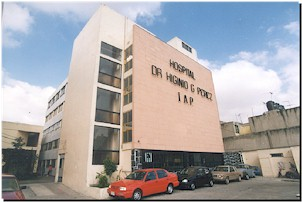

Esta institución fue fundada el 12 de octubre de 1912 por el Dr. Higinio G. Pérez, en circunstancias muy especiales. En el país se vivía un espíritu de libertad y democracia al terminar la dictadura del Gral. Porfirio Díaz , y se iniciaba un periodo de renovación (1). El Dr. Pérez era maestro de la Escuela Nacional de Medicina Homeopática, que dependía directamente del Estado, Ya estando retirado fue visitado por un grupo de exalumnos que le pidieron les impartiera pláticas de medicina homeopática. Al paso del tiempo surgió la idea de fundar una escuela sin la tutela del gobierno, y orientada específicamente hacia las clases trabajadoras, por lo que el Dr. Pérez, acompañado de un grupo de médicos homeópatas y de la escuela tradicional dieron inicio al proyecto (2).
Esta institución fue fundada el 12 de octubre de 1912 por el Dr. Higinio G. Pérez, en circunstancias muy especiales. En el país se vivía un espíritu de libertad y democracia al terminar la dictadura del Gral. Porfirio Díaz , y se iniciaba un periodo de renovación (1). El Dr. Pérez era maestro de la Escuela Nacional de Medicina Homeopática, que dependía directamente del Estado, Ya estando retirado fue visitado por un grupo de exalumnos que le pidieron les impartiera pláticas de medicina homeopática. Al paso del tiempo surgió la idea de fundar una escuela sin la tutela del gobierno, y orientada específicamente hacia las clases trabajadoras, por lo que el Dr. Pérez, acompañado de un grupo de médicos homeópatas y de la escuela tradicional dieron inicio al proyecto (2).
Las mismas circunstancias acontecieron en la Escuela Nacional de Jurisprudencia, y dieron origen a la Escuela Libre de Derecho, fundada también en el año de 1912 y que sigue funcionando actualmente (3). La Escuela Libre de Homeopatía se fundó bajo 3 premisas:
-La libertad de enseñanza profesional.
-La posibilidad para las clases trabajadoras de adquirir una educación a nivel superior.
-El apego a los cánones ortodoxos en la enseñanza y la práctica de la medicina homeopática.
 El funcionamiento de la Escuela fue muy especial. Se instaló en la propia casa del Dr. Higinio G. Pérez, en las calles de Santa Lucía Nº 6, en el populoso barrio de Peralvillo, y de hecho fue sostenida del propio bolsillo del fundador. Los profesores no cobraban ni un centavo por impartir sus cátedras, y las módicas cuotas que pagaban los alumnos eran utilizadas para solventar los gastos fijos de la institución, Las clases se iniciaron en enero de 1913, un poco después de la "Decena Trágica" y se continuaron impartiendo durante todo el periodo de la Revolución Mexicana (4).
El funcionamiento de la Escuela fue muy especial. Se instaló en la propia casa del Dr. Higinio G. Pérez, en las calles de Santa Lucía Nº 6, en el populoso barrio de Peralvillo, y de hecho fue sostenida del propio bolsillo del fundador. Los profesores no cobraban ni un centavo por impartir sus cátedras, y las módicas cuotas que pagaban los alumnos eran utilizadas para solventar los gastos fijos de la institución, Las clases se iniciaron en enero de 1913, un poco después de la "Decena Trágica" y se continuaron impartiendo durante todo el periodo de la Revolución Mexicana (4).
Los horarios fueron orientados hacia las clases trabajadoras, por lo que las clases se impartían de 6:30 a 9 a.m. y de 6 a 10 p.m. Las prácticas de disección se llevaban a cabo en los anfiteatros del panteón de Dolores, donde los alumnos de la Escuela de Medicina hacían sus prácticas.
Una característica de la Escuela fue la gran unión y camaradería que imperaba entre profesores y alumnos. A partir de 1917 empezaron a funcionar la secundaria y preparatoria anexas a la institución, que permitían a los alumnos regularizar sus estudios ya que era requisito haber terminado la educación preparatoria para ingresar a la Escuela, requisito que no todas las escuelas exigían por aquel entonces (4).
Desde sus inicios la Escuela contó con dispensarios de enseñanza, y a partir de 1918 formó una red de consultorios populares que dieron servicio a la población.
Lo que ahora es el Hospital Dr. Higinio G. Pérez empezó a funcionar en 1917 como un anexo de enseñanza clínica para los estudiantes
A partir de 1915 la Escuela arrendó una vieja casona en la calle de la Paz Nº 24 (hoy Jesús Carranza), para posteriormente trasladares al hermoso edificio barroco en las calles de la Academia Nº 18. Cuando la Secretaría de Educación pasó a asentarse en el inmueble, la Escuela Libre volvió a las calles de Santa Lucía Nº 6, donde permanece hasta la fecha (5).
 Al morir el Dr. Higinio G. Pérez, legó la casa a la Institución. Los directivos gestionaron la compra del terreno adjunto, que pertenecía al sacerdote Trinidad Pérez, hermano del fundador. La hipoteca fue liquidada por medio de donaciones de los mismos alumnos y profesores de la institución (6).
En la década de los 50's se inició la construcción del hospital escuela, que duró casi 20 años, finalizándose en abril de 1970 (7). En ese mismo año se comenzó a construir el nuevo edificio de la Escuela, siendo terminado en 1978.
Al principio el soporte legal fue el artículo 3º de la Constitución de 1857, que garantizaba la libertad de enseñanza. Al promulgarse la Constitución de 1917, la fracción XXVII del artículo 73 sustentaba la existencia de la enseñanza superior que no causaba gastos sobre el erario nacional(8). En el año de 1930, el Presidente de la República, Lic. Emilio Portes Gil, emitió el 18 de enero el Decreto-Concesión que actualmente da fundamentación legal a la Escuela Libre (9). En 1939 la institución se vió atacada por el Poder Ejecutivo, que emitió un Decreto Presidencial para cerrarla. Los directivos interpusieron un amparo, que solventaron de su propio bolsillo, y finalmente el juicio de amparo Nº 161-39 con ejecutoria 17 de junio de 1940 da completa vigencia al soporte legal de la Escuela (10).
A lo largo de los años se ha caracterizado por formar profesionistas plenamente capacitados en las áreas de medicina general y medicina homeopática, ya que los programas de estudio, de 6 años de duración, incluyen todas las materias que se imparten en las facultades de medicina así como todas las materias homeopáticas. También existe la carrera de enfermería y obstetricia, que forma enfermeras con todas las capacidades de una enfermera general, adicionándose los conocimientos de la medicina homeopática.
Dentro de las distinciones que han caracterizado a la Escuela Libre está el haber erigido en 1918 el primer monumento a la memoria de Samuel Hahnemann en Latinoamérica (4), La organización del primer Congreso Internacional de Medicina Homeopática realizado en América, en el salón Panamericano de Palacio Nacional (11), y auspiciado por la Secretaría de Educación en agosto de 1929,y la celebración del Primero Congreso Nacional de Medicina Homeopática, en julio de 1943 (12).
El primer trasplante de córnea realizado en México fue logrado por el Dr. Mario Escobar en el hospital de la Escuela (6).
Dentro de la lista de los egresados se encuentran médicos de gran importancia dentro de la historia de la homeopatía en México, como son el Dr. Eulalio Darío Flores, quién tradujo 7 libros clásicos de medicina homeopática del inglés y del francés al español, el Dr. Proceso Sánchez Ortega, personalidad a nivel mundial dentro del ámbito homeopático y autor de varias publicaciones, y el Dr. David Flores Toledo, actual presidente del Consejo Consultivo Nacional Médico Homeopático A. C.
En diciembre de 1994 la Escuela pasó a formar parte de la Junta de Asistencia Privada del Distrito Federal, con lo que se cumplieron finalmente los deseos del Dr. Higinio G. Pérez, que la Escuela Libre de Homeopatía pasara a ser patrimonio del pueblo de México (6).
Actualmente, en pleno proceso de renovación, esta Escuela forma profesionistas en medicina homeopática y enfermería capacitados para ayudar en la atención de primer nivel al pueblo de México.
1.- Pazos, Luis. "Histria Sinóptica de México". Ed. Diana. México 1993.
2.- Delgado Crespo Angel "Como Nació la Escuela Libre de Homeopatía de México" La Homeopatía de México. Núm. 421. Octubre de 1979. México, D. F.
3.- Escuela Libre de Derecho. Revista de Investigaciones Jurídicas. Año 11 Número 11. México. 1987.
4.- Moheno, Querido. "En defensa de los homeópatas", Reseña histórica de la Escuela Libre de Homeopatía. México D. F. 1924.
5.- Jaramillo, Leonardo. "Ligera reseña de la evolución de la Escuela Libre de Homeopatía de México". La Homeopatía en el Mundo. Año 12-IX 1961-1962. Números 1 y 2. México D. F.
6.- Archivos de la Escuela Libre de Homeopatía de México I.A.P.
7.- Gallardo E. "Noticias de México. Ceremonia de Inauguración del Hospital - Escuela Dr. Higinio G. Pérez dela Escuela Libre de Homeopatía de México." La Homeopatía de México. 6ª Epoca, Núm. 330, Vol. XV. Noviembre de 1970. México, D. F.
8.- De la Barrera, Beltrán. "Los Médicos de la Escuela Libre de Homeopatía y los Artículos 3º y 4º Constitucionales".Folleto. Escuela Libre de Homeopatía de México" Enero de 1934. México, D. F.
9.- Delgado Crespo Angel "Como Nació la Escuela Libre de Homeopatía de México" "Decreto de 22 de octubre de 1929" La Homeopatía de México. Núm. 423.Enero de 1980. México, D. F.
10.- Pirrón Q. Leonardo Antonio. 1er Secretrio del Juzgado 1º del Distrido. Juicio de amparo 161-939.
11.- Trejo, Graciela. "Dr. Higinio G. Pérez, su vida y su obra". La Homeopatía de México. Nº 468. Junio de 1984.
12.- Rocha Pastor G. "Discurso de Apertura del Primer Congreso Nacional de Homeopatía en la Escuela Libre de Homeopatía de México". La Homeopatía de México. Núm. 26.
Septiembre de 1943. México, D. F.
MISIÓN
Establecer el equilibrio biopsicosocial del individuo enfermo, empleando en cada caso la Terapéutica individualizada que el paciente requiera para lograr su curación de un amanera pronta, suave y duradera.
FUNCIÓN
Formar recursos humanos en medicina, buscando la excelencia académica, para adaptarlos a las políticas establecidas en el país en materia de salud, inculcándoles además valores y principios para un mejor trato hacia el enfermo.
OBJETIVO
El objeto de la institución es dar atención médica asistencial a las personas, familias y comunidades de bajos recursos económicos carentes de servicios básicos de salud; la formación de recursos humanos debidamente capacitados en el nivel de Licenciatura de Médico Homeópata Cirujano y Partero y Técnico en Enfermería y Obstetricia; la promoción y desarrollo de la investigación científica en el otorgamiento de los servicios de salud y la formación de los profesionales que los deban proporcionar sobre la base de los lineamientos establecidos en el Plan Nacional de Salud.
IDEARIO FILOSOFICO
La Escuela Libre de Homeopatía de México, I.A.P. consciente de la trascendencia de las instituciones educativas de nivel superior, expresa en este ideario su filosofía y los objetivos generales que propone para servir a la sociedad mexicana.
- Otorga prioridad a la formación integral del estudiante como una forma de contribuir eficazmente a la transformación de la sociedad. Traducido en la realización plena de la persona humana, mediante la atención cuidadosa de todas y cada una de sus dimensiones.
- Aspirar a ser una fuerza viva, capaz de contribuir a la orientación de nuestra sociedad, atenta a las necesidades y exigencias de ésta sabiendo que son indispensables muchos cambios para instaurar en ella una mayor justicia y lograr la paz.
- Impulsa, dentro y fuera de sus muros, el genuino espíritu comunitario, solución al doble escollo del individualismo egoísta y estéril y del colectivismo despersonalizado. Con el propósito que los egresados se dediquen a proyectos comunes para superar sus intereses individuales y ejercer su libertad en la comunidad de ideales y de acción.